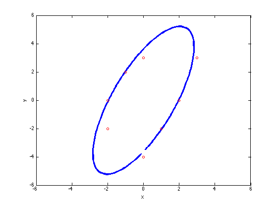

Problem 5
Fitting elipses via least squares
Contents
Using the points in section b
y = [3;-2;3;2;-2;-4;0;0]; x = [3;1;0;-1;-2;0;-2;2];
Displaying the equation of the fitted elipse
[b, c, d] = ellipse(x, y);
fprintf('\nEllipse: %f*x^2 + %f*x*y + %f*y^2 = 1\n', b, c, d);
Ellipse: 0.257358*x^2 + -0.200537*x*y + 0.075581*y^2 = 1
I have done two plots the first one using ezplot
figure; el = ezplot(sprintf('%f*x^2 + %f*x*y + %f*y^2 = 1', b, c, d)); set(el, 'LineWidth', 3) hold on; plot(x, y, 'o', 'MarkerSize', 5); xlabel('x'); ylabel('y');

Using the tan(theta) trick
theta = linspace(-0.49*pi, 0.49*pi)'; gen_x = @(theta)(1./sqrt(b + c * tan(theta) + d*tan(theta).^2)); gen_y = @(theta)(tan(theta)./sqrt(b + c * tan(theta) + d*tan(theta).^2)); x_gen = gen_x(theta); y_gen = gen_y(theta); figure; plot([x_gen; -x_gen], [y_gen; -y_gen],'LineWidth', 3); hold on; plot(x, y, 'ro', 'MarkerSize', 5); xlabel('x'); ylabel('y');axis([-6 6 -6 6]);
Using manually input points
load('points.mat');
The fitted ellipse is
[b, c, d] = ellipse(x, y);
fprintf('\nEllipse : %f*x^2 + %f*x*y + %f*y^2 = 1\n', b, c, d);
Ellipse : 0.125919*x^2 + -0.029212*x*y + 0.343682*y^2 = 1
Plot of the fitted ellipse
figure; el = ezplot(sprintf('%f*x^2 + %f*x*y + %f*y^2 = 1', b, c, d)); set(el, 'LineWidth', 3) hold on; plot(x, y, 'o', 'MarkerSize', 5); xlabel('x'); ylabel('y');